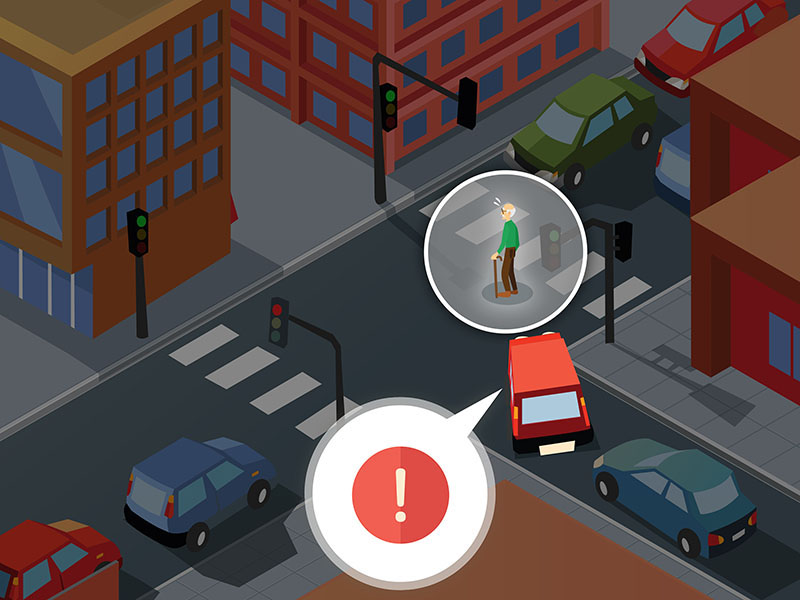

Comportamenti a salvaguardia degli anziani, ciechi e sordociechi

Comportamento che il conducente di un veicolo deve tenere verso gli altri utenti della strada:
- oltre a rispettare le norme specifiche della circolazione, deve tenere un rapporto corretto, paziente e tollerante verso gli altri utenti della strada, anche in caso di rallentamento della circolazione
- deve sempre usare la massima prudenza, anche quando gli altri conducenti devono dargli la precedenza
- deve cercare di prevedere il comportamento degli altri utenti, che può non essere corretto
- deve tutelare la propria e l'altrui sicurezza
- deve rispettare gli agenti del traffico (anche se non in divisa) e collaborare con essi
- deve procedere a bassa velocità sopra le pozzanghere o su strada ricoperta da brecciolino, per evitare di sbandare o sporcare/colpire gli altri utenti della strada